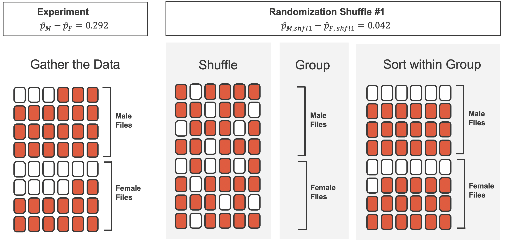

Lecture 06 - Inference
AMOD 5240H
Trent University
Today뗩 Content:
Inference
- Hypothesis testing
- Confidence intervals
- Estimation (we did this with linear models and will return to this again)
Estimation Paradigms
Parametric vs. Non-Parametric
- A parametric approach to a problem assumes a particular distribution for the population.
- A non-parametric approach does not require any particular distribution.
It sounds like we should always use a non-parametric approach but there are pros and cons to each!
Parametric vs. Non-Parametric
This distinction can be extremely subtle.
We will talk more about this when we look at \(\chi^{2}\)-tests, which are considered non-parametric.
Parametric vs. Non-Parametric
Benefits and drawbacks:
- Parametric approaches have more statistical power
- statistical power is the ability of a test to detect an effect when an effect is present
- results can less reliable if the distributional assumption is violated
- Non-parametric approaches work in almost any situation
- they have lower statistical power
We always want to use a parametric test if possible! They are simpler to run and have more statistical power.
Note
IMS2 terminology: Mathematical model (parametric) and Randomization or Bootstrapping (non-parametric).
Parametric vs. Non-Parametric
When we use a parametric approach, we can use a particular distribution and all of the machinery that comes with it!
- Find probabilities using
pnorm,pt,pf, etc- These help us find \(p\)-values in hypothesis testing!
- Determine quantiles using
qnorm,qchisq,qf, etc..- We need the quantiles for constructing confidence intervals!
Parametric vs. Non-Parametric
When we use a parametric approach, we can use a particular distribution and all of the machinery that comes with it!
- Find probabilities using
pnorm,pchisq,pf, etc - Determine quantiles using
qnorm,qchisq,qf, etc..
When we use a non-parametric approach, then we must approximate the sampling distribution.
- To calculate probabilities, we have to calculate them 락y hand using our approximated distribution (we use proportions!).
- To determine quantiles, we also have to do this 락y hand (proportions!).
- Most of the time, these two amount to finding the proportion of values abovesome cutoff, OR the value where above that point, a proportion of the values lie.
Confidence intervals - Parametric
Why do we report CIs?
- A plausible range of values for the population parameter is called a confidence interval.
- Using only a sample statistic to estimate a parameter is like fishing with a spear in a murky lake, and using a confidence interval is like fishing with a net.
- We can throw a spear where we saw a fish but we will probably miss. If we toss a net in that area, we have a good chance of catching the fish.
So the analogy: if we report a point estimate, we probably won뗪 hit the exact population parameter. If we report a range of plausible values we have a good shot at capturing the parameter.
Most importantly: a confidence interval gives us a sense of the uncertainty in our point estimate.
Confidence Interval: Uncertainty
I tell you that I randomly survey past AMOD students who have taken 5240 and that 90% of those surveyed loved this class.
Sounds great, right?
Confidence Interval: Uncertainty
I tell you that I randomly survey past AMOD students who have taken 5240 and that 90% of those surveyed loved this class.
Sounds great, right?
Now, I didn뗪 tell you how many observations I had, nor did I give you any sense of the uncertainty in that estimate.
Confidence Interval: Uncertainty
I tell you that I randomly survey past AMOD students who have taken 5240 and that 90% of those surveyed loved this class.
Sounds great, right?
Now, I didn뗪 tell you how many observations I had, nor did I give you any sense of the uncertainty in that estimate.
Instead, what if I told you that 90% of the students surveyed loved the class and the 95% confidence interval on the true proportion was the above?
The interpretation here is that we are 95% confident that the true proportion (the parameter) is in that interval.
Confidence Interval: Definition
A confidence interval is an interval estimate for a parameter that is calculated from data.
Let뗩 assume a confidence level of 95%. Then, the way that we should understand a confidence interval is:
If we were to repeatedly sample from the population and calculate a confidence interval for each sample, then approximately 95% of the confidence intervals would contain the true population parameter.
Note that there is NO probability mentioned here. The reason is that the true parameter is either in the interval or it is not. There is no probability associated with this once the interval is determined.
Confidence intervals are essentially another way to report the uncertainty in our point estimate.
Calculating a Confidence Interval
When constructing a confidence interval, we use the sampling distribution of the statistic we are calculating.
Let뗩 assume we are interested in the 95% confidence interval for the sample mean, \(\bar{X}\). Then, we want to find the end points \(a\) and \(b\) such that the following probability expression is true:
\[ P(a < \bar{X} < b) = 0.95 \]
- In particular, we want to find the middle 95% of the probability.
- This final piece of information about the middle 라nchors the expression above so that we can actually find a unique \(a\) and \(b\).
Calculating a Confidence Interval
This seems like it might be a bit of a pain, but, thanks to the CLT:
\[ \bar{X} \sim \mathcal{N} \left(\mu, \frac{\sigma}{\sqrt{n}} \right) \]
And we want to find:
\[ P(a < \bar{X} < b) = 0.95 \]
Calculating a Confidence Interval
\[ \begin{aligned} & & P(a < \bar{X} < b) &= 0.95 \\ \ Z\text{-transform} \quad &\rightarrow & P\left(\frac{a - \mu}{\frac{\sigma}{\sqrt{n}}} < \frac{\bar{X} - \mu}{\frac{\sigma}{\sqrt{n}}} < \frac{b - \mu}{\frac{\sigma}{\sqrt{n}}} \right) &= 0.95 \\ \text{Rewrite} \quad &\rightarrow & P\left(z_{a} < Z < z_{b} \right) &= 0.95 \end{aligned} \]
Calculating a Confidence Interval
Because \(\bar{X}\) is normally distributed (approximately, due to the CLT!),
\[ Z \sim \mathcal{N}(0, 1) \] and the values of \(z_{a}\) and \(z_{b}\) are the quantiles of the standard Normal distribution such that:
\[ \begin{aligned} P(z_{a} < Z < z_{b}) &= 0.95 & & \text{due to symmetry, } z_{a} = -z_{b}\\ P(Z < z_{b}) - P(Z < -z_{b}) &= 0.95 & & \text{take } 1 - \text{ to each side}\\ 1 - P(Z < z_{b}) + P(Z < -z_{b}) &= 1 - 0.95 & & \\ P(Z > z_{b}) + P(Z < -z_{b}) &= 0.05 & & \text{and } P(Z > z_{b}) = P(Z < -z_{b})\\ 2P(Z > z_{b}) &= 0.05 & & \\ P(Z > z_{b}) &= 0.025 & & \end{aligned} \]
Visually
Confidence Intervals for \(\mu\) Generally
In general, we would use the following formula to calculate a confidence
\[ \bar{x} \pm z^{\star} \cdot \frac{\sigma}{\sqrt{n}} \]
where \(z^{\star}\) is the quantile of the standard Normal distribution that corresponds to the desired confidence level. I.e., \(z^{\star}\) satisfies
\[ P(Z > z^{\star}) = \frac{1 - \text{confidence level}}{2} \]
Confidence Level Formula
This IS \(\mu \pm z^{\star}\cdot \frac{\sigma}{\sqrt{n}}\) where we have used \(\bar{x}\) as our best estimate of \(\mu\) and an actual quantile for \(Z\)!
I.e., this is the \(Z\)-transform! \(z^{\star} = \frac{x_{ci} - \mu}{SE_{\bar{X}}}\)
Quick Note
Use of Normal when \(\sigma\) is unknown
When \(\sigma\) is unknown, we use the sample standard deviation, \(s\), in place of \(\sigma\) and the \(t\)-distribution in place of the Normal distribution.
For the next few examples, we will assume that we know \(\sigma\), the population standard deviation.
We almost never know \(\sigma\), and will need to account for that situation.
Average Number of Relationships
A random sample of 50 college students were asked how many exclusive relationships they have been in so far.
This sample yielded a mean of 3.2.
The population standard deviation is known to be 1.74.
Construct the 95% confidence interval for the true mean number of exclusive relationships for all college students.
- \(\bar{x} = 3.2\)
- \(\sigma = 1.74\)
Average Number of Relationships
A random sample of 50 college students were asked how many exclusive relationships they have been in so far.
- \(n = 50\)
- \(\bar{x} = 3.2\)
- \(\sigma = 1.74\)
- confidence level \(= 95\%\)
Average Number of Relationships
The confidence interval could be calculated using:
[1] 3.18457 3.21543We are 95% confident that the true mean number of exclusive relationships for all college students is between 3.18 and 3.22.
Confidence Intervals - Non-Parametric
Non-Parametric Confidence Intervals
When we don뗪 know the population distribution, we can뗪 use the CLT to calculate a confidence interval (i.e., we can뗪 use the Normal distribution).
We need to use the sampling distribution of the statistic we are calculating, but what if we don뗪 know what that is?
Non-Parametric Confidence Intervals
When we don뗪 know the population distribution, we can뗪 use the CLT to calculate a confidence interval (i.e., we can뗪 use the Normal distribution).
We need to use the sampling distribution of the statistic we are calculating, but what if we don뗪 know what that is?
This is where the Bootstrap comes to the rescue!
Bootstrap Confidence Intervals
- The Bootstrap is a non-parametric method for estimating the sampling distribution of a statistic.
- The idea is to resample from the sample observations to estimate the sampling distribution of the statistic.
Wait what?
Bootstrap Confidence Intervals
- The Bootstrap is a non-parametric method for estimating the sampling distribution of a statistic.
- The idea is to resample from the sample observations to estimate the sampling distribution of the statistic.
Wait what?
That뗩 right! We resample from our observations, estimate the statistic, and repeat this over and over again.
Bootstrap Method
Assume we have a sample of \(n\) observations.
The steps for the Bootstrap are:
- Draw a sample of size \(n\) with replacement from the original sample.
- Calculate the statistic of interest.
- Repeat steps 1 and 2 a large number of times (e.g., 10,000).
- Use the empirical distribution (랃istogram) of the statistic to estimate the sampling distribution.
Instead of using a theoretical distribution, like the Normal, we use this set of resampled statistics to estimate the sampling distribution.
Average Number of Relationships
Let뗩 assume that we had a sample of 50 college students and we collected the number of exclusive relationships they have been in so far.
We want to calculate the 95% confidence interval for the true mean number of exclusive relationships for all college students.
Re-Sample the Observations 10,000 Times
There are many ways to do this, but the idea would be:
Empirical Distribution
Bootstrap Confidence Interval
Now, to find the 95% confidence interval, previously we wanted to find
\[ P(a < \bar{X} < b) = 0.95 \]
But Were assuming we don뗪 know the distribution for \(\bar{X}\)
Bootstrap Confidence Interval
Now, to find the 95% confidence interval, previously we wanted to find
\[ P(a < \bar{X} < b) = 0.95 \]
But Were assuming we don뗪 know the distribution for \(\bar{X}\)
HOWEVER, we keep talking about probabilities and proportions getting at the same idea
So we could estimate the 95% confidence interval by finding the 2.5% and 97.5% quantiles of the bootstrap sampling distribution.
Calculate the CI
We are 95% confident that the true mean number of exclusive relationships for all college students is between 2.61 and 3.82.
Case Study: Gender Discrimination
Gender Descrimination
- In 1972, as a part of a study1 on gender discrimination, 48 male bank supervisors were each given the same personnel file and asked to judge whether the person should be promoted to a branch manager job that was described as routine.
- The files were identical except that half of the supervisors had files showing the person was male while the other half had files showing the person was female.
- It was randomly determined which supervisors got 랈ale applications and which got 랁emale applications.
- Of the 48 files reviewed, 35 were promoted.
- The study is testing whether females are unfairly discriminated against.
- Is this an observational study or an experiment?
Data
At a first glance, does there appear to be a relationship between promotion and gender?
Promoted
|
|||
|---|---|---|---|
| Yes | No | Total | |
| Gender | |||
| Male | 21 | 3 | 24 |
| Female | 14 | 10 | 24 |
| Total | |||
| 35 | 13 | 48 | |
% of males promoted: 21 / 24 * 100 = 87.5
% of females promoted: 14 / 24 * 100 = 58.3
% difference: 87.5-58.3 = 29.2
Practice
We saw a difference of almost 30% (29.2% to be exact) between the proportion of male and female files that are promoted. Based on this information, which of the below is true?
- If we were to repeat the experiment we will definitely see that more female files get promoted. This was a fluke.
- Promotion is dependent on gender, males are more likely to be promoted, and hence there is gender discrimination against women in promotion decisions.
- The difference in the proportions of promoted male and female files is due to chance, this is not evidence of gender discrimination against women in promotion decisions.
- Women are less qualified than men, and this is why fewer females get promoted.
Practice
We saw a difference of almost 30% (29.2% to be exact) between the proportion of male and female files that are promoted. Based on this information, which of the below is true?
- If we were to repeat the experiment we will definitely see that more female files get promoted. This was a fluke.
- fPromotion is dependent on gender, males are more likely to be promoted, and hence there is gender discrimination against women in promotion decisions. Maybe!
- The difference in the proportions of promoted male and female files is due to chance, this is not evidence of gender discrimination against women in promotion decisions. Maybe!
- Women are less qualified than men, and this is why fewer females get promoted.
Two Competing Claims
There is nothing going on. (Null Hypothesis)
Promotion and gender are independent.
No gender discrimination.
Observed difference in proportions is simply due to chance.
There is something going on. (Alternative Hypothesis)
Promotion and gender are dependent.
There is gender discrimination.
Observed difference in proportions is not due to chance.
Hypothesis Testing
The Secret Recipe
- Setup: State the population and parameter of interest.
- Hypotheses: State your hypotheses (\(H_{0}\) and \(H_{A}\)).
- Assumptions: Test assumptions (e.g. normality, independence, etc.)
- Calculation: Find the \(p\)-value:
- Parametric Approach: calculate the test statistic and find \(p\)-value.
- Calculate your test statistic assuming \(H_{0}\) is true
- Simulation Approach: Approximate the null distribution, find the \(p\)-value, and visualize the \(p\)-value.
- Parametric Approach: calculate the test statistic and find \(p\)-value.
- Statistical Decision: Determine whether to reject or not reject the null hypothesis:
- compare your p-value to a significance level
- Conclusion: There is
- evidence to support rejecting the null hypothesis (reject \(H_{0}\))
OR - not enough evidence to support rejecting the null hypothesis (fail to reject \(H_{0}\))
- evidence to support rejecting the null hypothesis (reject \(H_{0}\))
Hypothesis Tests as a Trial
Hypothesis testing is very much like a court trial.
 1
1
- \(H_0\): defendent is not guilty
\(H_A\): defendent is guilty - We then present the evidence \(-\) collect data
- Then we judge the evidence: Could these data plausibly have happened by chance if the null hypothesis were true?
- If they were very unlikely to have occurred, then the evidence raises more than a reasonable doubt in our minds about the null hypothesis
- Ultimately, we must make a decision: how unlikely is unlikely?
Hypothesis Test as a Trial (cont뗛)
- If the evidence is not strong enough to reject the assumption of innocence, the jury returns with a verdict of 랉ot guilty.
- The jury does not say that the defendant is innocent, just that there is not enough evidence to convict.
- The defendant may, in fact, be innocent, but the jury has no way of being sure.
- Said statistically, we fail to reject the null hypothesis.
- We never declare the null hypothesis to be true, because we simply do not know whether it뗩 true or not.
- Therefore we never 라ccept the null hypothesis.
Hypothesis Test as a Trial (cont뗛)
- In a trial, the burden of proof is on the prosecution.
- In a hypothesis test, the burden of proof is on the unusual claim.
- The null hypothesis is the ordinary state of affairs (the status quo), so it뗩 the alternative hypothesis that we consider unusual and for which we must gather evidence.
For Emphasis
We NEVER:
- 랋rove anything with a hypothesis test
- find the alternative hypothesis ture
- find the null hypothesis true
- accept the null hypothesis
- accept the alternative hypothesis
- reject the alternative hypothesis
Statistical Decision
Two options:
1. fail to reject the null hypothesis;
2. reject the null hypothesis;
How Do We Do This?
What뗩 Our Objective?
So we want to look at this data: 48 experimental units (bank supervisors) with results (35 promoted, 13 not), and determine whether we think the gender of the applicant is independent of the determination.
How?
Our Data
We have 48 files:
- 24 were labeled 딵emale (bottom 24); and
- 24 were labeled 딼ale (top 24).
- Of these cards, 35 were 딿romoted (red) and 13 were 딽ot promoted (white).
Variability of the Statistic, Under the Assumption
- If the decision of the supervisors was independent of the gender of the applicant file, then the results we obtained were entirely due to chance.
- The files were all identical aside from the declared name/gender of the applicant, so we assume that each supervisor would have made the same decision regardless of the file presented.
- We can use randomization to explore this scenario.
How would we expect the 48 files (male / female) to be split up between 랋romoted and 랉ot promoted if there was no dependence on of promotion on the file뗩 gender?
Expectation: Promotion Independent on Gender
- If we ignore the Gender:
- Some supervisors are more likely to promote;
- Some supervisors are less likely to promote;
- This is why we randomly assigned the files to the bank supervisors.
- There should be an equal number of 랈ore likely to promote and 랇ess likely to promote supervisors that received each Gender of file.
So ?
Randomization: Decision Independent of Gender
We can perform a randomization simulation, where we simulate what could have happened, under the scenario just mentioned. In such a simulation, we shuffle the 48 files (35 labeled as 딿romoted and 13 labeled as 딽ot promoted) and deal them out into two stacks: 24 into a pile labeled 딵emale and 24 into a pile labeled 딼ale.
Variability of the Statistic
- Even if the two are independent, we won뗪 expect the difference in the proportions to be exactly 0.
- For one thing, we have 35 딿romoted cases (not divisible by 2!).
- No matter what, there will be some difference in the two arbitrary (gender) groups.
How much variability is a sign of something suspicious going on?
That뗩 the point of statistical inference!
Stating the Hypotheses
- \(H_0\): Null hypothesis. The variables gender and decision are independent.
The difference in promotion rates of 29.2% was due to natural variability inherent in the population. - \(H_A\): Alternative hypothesis. The variables gender and decision are not independent. The difference in promotion rates of 29.2% was not due to natural variability, and equally qualified female personnel are less likely to be promoted than male personnel.
Simulation 1
Simulation 1: Summary
Promoted
|
|||
|---|---|---|---|
| Yes | No | Total | |
| Gender | |||
| Male | 18 | 6 | 24 |
| Female | 17 | 7 | 24 |
| Total | |||
| 35 | 13 | 48 | |
Difference: 18/24 - 17/24 = 0.0417.
Doing the Simulation Again and Again
So we did one simulation, and found a really small difference in promoted proportions, under the assumption that there is independence. Is this evidence?
Do it again!
- Simulation 2: difference of -0.0417
- Simulation 3: difference of 0.208
- . ? COMPUTERS!
Results of Many, Many Shuffles

Figure: Stacked dot plot of differences from 100 simulations under assumption of independence.
What was our observed difference in proportions (sample statistic) again? 0.292
So Is Our Data Weird?
The question we can answer, at the end of all of this, is:
How often would we expect see a result like 0.292, or even bigger, if the null hypothesis were true?
And the answer is: around 2 times in 100 simulations.
Is This Rare?
- The difference of 29.2% is a rare event if there really is no impact from listing gender in the candidates files.
- This provides us with two possible interpretations of the results:
- If \(H_0\), the Null hypothesis, is true: gender has no effect on promotion decision, and we observed a difference that is so large that it would only happen rarely.
- If \(H_A\), the Alternative hypothesis, is true: gender has an effect on promotion decision, and what we observed was actually due to equally qualified female candidates being discriminated against in promotion decisions, which explains the large difference of 29.2%.
- We determined that there was only approximately a 0.02 (2%) probability of obtaining a sample where 29.2% or more male candidates than female candidates get promoted under the null hypothesis.
- We conclude that the data provide evidence of gender discrimination against female candidates by the male supervisors. In this case, we would side with the \(H_A\), alternative hypothesis, as a more plausible outcome.
Statistical Inference: Definition
Statistical inference is the practice of making decisions and conclusions from data in the context of uncertainty. Errors do occur, just like rare events, and the dataset at hand might lead us to the wrong conclusion.
While a given dataset may not always lead us to a correct conclusion, statistical inference gives us tools to control and evaluate how often these errors occur.
Re-Doing the Gender Discrimination Example
- Earlier, we 띿id a simulation where we just saw the results.
- Now were going to do the entire simulation, properly.
Rows: 48
Columns: 2
$ gender <fct> male, male, male, male, male, male, male, male, male, male, m
$ decision <fct> promoted, promoted, promoted, promoted, promoted, promoted, pRe-Doing the Gender Discrimination Example
The over structure of using the infer package is always the same:
- data frame to
specify()tohypothesize()togenerate()tocalculate()
ALWAYS.
We may not have the hypothesize() function, depending on what we are doing.
Using infer
specify()what columns of the data frame we are interested in and what relationship, if any, we are looking at.hypothesize()sets up the null hypothesisnull: 랎ype of hypothesis test- null value will be needed, depending on the test
generate()performs the simulationreps: number of replicates (simulation runs)type: how the simulation should be run (draw,bootstrap,permute)
calculate()calculates the estimate of interest from each replicatestat: the statistic / estimator to be calculated ("mean","prop","diff in means","diff in props", etc.)
Gender Discrimination Example
What does the output of specify() %>% hypothesize() %>% generate() look like:
Rows: 144
Columns: 3
Groups: replicate [3]
$ decision <fct> promoted, promoted, not promoted, not promoted, not promoted
$ gender <fct> male, male, male, male, male, male, male, male, male, male,
$ replicate <int> 1, 1, 1, 1, 1, 1, 1, 1, 1, 1, 1, 1, 1, 1, 1, 1, 1, 1, 1, 1, Re-Doing the Gender Discrimination Example
We can then group these by replicate, and count the results:
Re-Doing the Gender Discrimination Example
Finally, calculate the difference in proportion, male - female
Response: decision (factor)
Explanatory: gender (factor)
Null Hypothesis: independence
# A tibble: 3 × 2
replicate stat
<int> <dbl>
1 1 -0.0417
2 2 -0.0417
3 3 0.0417Then our observed statistic used the breakdown of 21 / 24 and 14 / 24. How often do we see a result this big, or bigger?
Re-Doing, Bigger
Re-Doing, Bigger(er)
In 10,000 replicates of this shuffling simulation, we saw a result like our observed statistic around NA% of the time.
Not very likely!
Discrete Simulation Results
- The binomial and 라rea under its curve are not the same thing.
- But discrete simulation results and binomial distributions are very, very similar.
- They are both discrete objects (which means a finite, typically small, number of \(x\) possibilities).
- They both can be plotted as histograms,
- We compute 라rea under the curve in the same way: add up the rectangles!
- Recall the simulation we concluded with earlier.
Hypothesis Tests
Hypothesis Testing
Earlier in this lecture we handwaved an explanation of a hypothesis test. Let뗩 formally define the ideas, and set up the structure for one particular test, involving the binomials we just reviewed!
Hypothesis Test Definition
- A hypothesis test is a formal technique for evaluating two competing (mathematical statement) possibilities.
- In each scenario, we describe a null hypothesis which represents either a skeptical perspective or a perspective of no difference.
- We also have an alternative hypothesis, which represents a new perspective such as the possibility of a relationship between two variables or a treatment effect in an experiment.
- The alternative hypothesis is usually the reason the scientists set out to do the research in the first place, and is connected to the scientific hypothesis.
Null and alternative hypotheses.
The null hypothesis \((H_0)\)
often represents either a skeptical perspective or a claim of 랉o difference to be tested.
The alternative hypothesis (\(H_A\))
represents an alternative claim under consideration and is (for us, always!) represented by a range of possible values for the value of interest.
Setting Up \(H_{0}\) and \(H_{A}\)
When the hypotheses can be represented as a mathematical expression, the expression that contains equality is the null!
Containing equality means: \(=\), \(\leq\), or \(\geq\)
The Famous p-value
- The p-value is one of the most misunderstood concepts in all of science.
- Formally, it is: the probability of observing data at least as favorable to the alternative hypothesis as our current dataset, if the null hypothesis were true.
- We뗣l often refer to this as the probability of seeing a result as extreme as, or more extreme than the observed statistic, under the assumption that the null is true.
The Famous p-value
- The p-value is one of the most misunderstood concepts in all of science.
- Formally, it is: the probability of observing data at least as favorable to the alternative hypothesis as our current dataset, if the null hypothesis were true.
- We뗣l often refer to this as the probability of seeing a result as extreme as, or more extreme than the observed statistic, under the assumption that the null is true.
Recall the simulation (10,000 replicates) we did for the gender bias study. We found results that were \(\geq\) the observed statistic (called the test statistic).
Those were results that were as extreme as (the \(=\)) or more extreme than (the \(>\)) the observed difference in proportions.
Is a Simulation the Real p-value?
- Technically speaking, when we run a simulation, regardless of how many replicates we use, we aren뗪 getting the real p-value.
- Think again about the gender bias study.
- We had 48 samples, 35 땁uccesses and 13 딵ailures.
- How many ways are there to choose 24 samples from this set of 48?
- That is a really big number: 3,224,763,683,100.
- We뗛 need to observe over 3 trillion unique permutations of the data in order to get the exact p-value under the null.
- However, what we뗬e discovered is that mathematically, doing 란nough simulations gets us really close.
Let뗩 try increasing numbers of simulations and see what happens for this case.
Results: Increasing Replicates
Making Decisions
- A hypothesis test is about making a decision.
- Given the data, how probable is the alternative hypothesis?
- Do we believe it is plausible and the actual truth of the situation?
- When the p-value is small, we say the results are statistically discernible (or sometimes referred to as statistically significant).
- 랍mall is determined by us, the researchers before we run the test!
- This means the data provide such strong evidence against \(H_0\) that we reject the null hypothesis in favor of the alternative hypothesis.
- The threshold is called the discernibility level and often represented by \(\alpha\).
- \(\alpha\) can also be called the significance level
- The value of \(\alpha\) represents how rare an event needs to be in order for the null hypothesis to be rejected.
- Historically, many fields have set \(\alpha = 0.05\) if the null hypothesis is to be rejected, but this varies widely.
Statistical Discernability
We say that the data provide statistically discernible evidence against the null hypothesis if the p-value is less than some predetermined threshold (e.g., 0.01, 0.05, 0.1).
Discernability
I will basically never use this term. I am more likely to say that we have found a statistically significant result (i.e., rejected the null hypothesis). However, the term does get used, so it뗩 good to know!.
Inference for Single Proportions
Single Proportion Tests
- We often encounter situations where we have gathered data (e.g., from a survey) where the responses can be categorized as: positive or negative; true or false; yes or no.
- A reasonable way to represent such data is via a proportion: the ratio of the number of 랓es results to the total number of trials.
- For example, we might have reproductive fitness in an ecological example, where we sample from 36 sites known to have been used by shorebirds to nest in the past.
- Of those 36 sites, 11 are observed to have active nesting occurring.
- Thus, the proportion of sites actively being used is 11/36, or 0.306.
Setting Up the Test
- When doing a test (any test!), the first question we ask is: what is our parameter of interest and what statistic (or estimator) will be use to find a point estimate?
- That is, what population did we sample from, what have we observed, and what kind of statistic do we need to use?
- In single proportions, the parameter of interest is the population proportion and the point estimate is the sample proportion: just the ratio of successes to trials (number of observed 랍uccesses divided by the number of observations).
- We denote this as \(\hat{p}\).
- It is our best guess for the truth, \(p\) (the population proportion).
- We take the parameter, and set up a hypothesis around it.
- This comes with three things: (1) the null hypothesis; (2) the alternative hypothesis; (3) any assumptions that we had to make to make this work.
Setting Up the Test
In the case of the parameter of interest being the population proportion, our null hypothesis will written with respect to \(p\).
This is some underlying truth about the population that we don뗪 know.
So our null will always be a statement like:
\[ H_0: p = ??? \]
Later, we will use the sample proportion, \(\hat{p}\), to make a statistical decision.
Setting Up the Test
- As with the null, we are talking about the population proportion of some attribute, \(p\).
- There are three options for an alternative hypothesis.
- We can think that: \(p > ??\) OR \(p < ??\) OR \(p \neq ??\)
- That뗩 it.
- We can think that: \(p > ??\) OR \(p < ??\) OR \(p \neq ??\)
- The alternative is that \(p\) is greater than something, less than something, or not-equal-to something.
And what is that something \(??\)? Always the value in the null hypothesis!
Note
Think about what this 랎est is: it is a binary decision. Either you decide the evidence (from the data) isn뗪 rare and odd, so you can뗪 reject the null; or you decide the evidence is rare, and odd, so you reject the null.
In the latter case, you don뗪 actually know what the truth is, just that it isn뗪 the null. So \(>\), \(<\) or \(\neq\) is the best you can do.
Setting Up the Test
- What assumptions are necessary to make this work?
- Not a lot!
- We have to assume that the samples are independent random samples taken from a population, and then that the proportion is computed in a sensible way.
- These are essentially always true.
- Then, because of the key assumption (independence), we get something really powerful: independent samples (trials) taken from a population and a count of 랍uccesses.
- We take this count and divide by the total number of observations which results in a proportion, distributed as a Binomial random variable.
In such a case, we say that the null distribution is a Binomial.
Organ Donation Example
- People providing an organ for donation sometimes seek the help of a special 랈edical consultant.
- These consultants assist the patient in all aspects of the surgery, with the goal of reducing the possibility of complications during the medical procedure and recovery.
- Patients might choose a consultant based in part on the historical complication rate of the consultant뗩 clients.
- One consultant tried to attract patients by noting the average complication rate for liver donor surgeries in the US is about 10%, but her clients have only had 3 complications in the 62 liver donor surgeries she has facilitated.
- She claims this is strong evidence that her work meaningfully contributes to reducing complications (and therefore she should be hired!).
Perform a test where you require that the observed outcome be very rare (less than 0.02 probability) in order to believe the exceptional claim she is making.
Example: Key Information
- average complication rate: 10%
- her patients: 3 in 62
- claims this is strong evidence that she is better than average
Convert this into math. From the provided population average:
\[ H_0: p = 0.10 \]
Her exceptional claim: that she is better than the average, and her patients experience less complications than average.
\[ H_A: p < 0.10 \]
Finally, from the patient information:
\[ \hat{p} = 3/62 = 0.0483871 \]
We don뗪 round!
Example: Doing the Test
- We can assume that each patient is independent of the other patients, so we have 62 randomly sampled observations from a larger population of 랋eople who undergo liver transplants as donors.
- Thus, the distribution of the number of 랍uccesses (meaning, a complication!) is Binomial, with \(n = 62\).
- The probability of 랍uccess is the population average, \(0.10\).
That is:
\[ \hat{p} \sim \text{Binomial}(n = 62, p = 0.10) \]
- Doing the 랎est is really just answering the following question:
- if \(\hat{p}\) is distributed this way (we say 랏nder the null), then what is the probability of seeing a result like 0.0483871 (3 랍uccesses) or even smaller?
Example: Formally computing the p-value
- Under the null, \(\hat{p}\) is a Binomial with \(n=62\) and \(p = 0.10\).
- In that case, we would expect to see a result ㄹs extreme as, or more extreme than (in the direction left) 3-in-62 with probability 0.1209787. Or around 12% of the time.
- Is this rare?
- 12% is not that low.
- We뗛 expect to see that fairly often, just by chance: 12% of the time!
- Thus, the consultant뗩 란vidence is not very strong, and we see no convincing reason to conclude that she is better than average at helping her patients with their transplant donations.
- In formal statistical language, we fail to reject the null hypothesis and conclude that there is insufficient statistical evidence to think that \(p < 0.10\) for this consultant.
The Full Idea Written Out
More Space If Needed
Recap
We뗬e spent a lot of time today developing the general framework for hypothesis testing.
We looked at an example of two proportions to motivate ourselves, and then considered how to design and test an example with one proportion.
We will continue this development in the coming lectures.